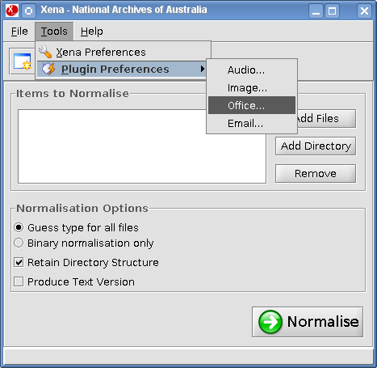
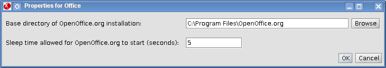

From the Xena menu, select Tools -> Plugin Preferences -> Office.

Click Browse and navigate to the location of OpenOffice.org 2.x.x. Under Windows this is usually located under the C:\Program Files folder, while under Linux this is often /usr/lib/ although it depends on your distribution. OSX installs this into the /Applications directory.
The default sleep time value is set to 5 seconds. This is the length of time that Xena will wait for your computer to start OpenOffice.org when it is needed for Office document conversions. The value may be reduced (perhaps down to just a few seconds) on a fast computer where OpenOffice.org starts quickly.

NOTE: Normalising is more reliable where only a single version of OpenOffice.org is installed on a computer, so if earlier versions have been installed they should be removed.